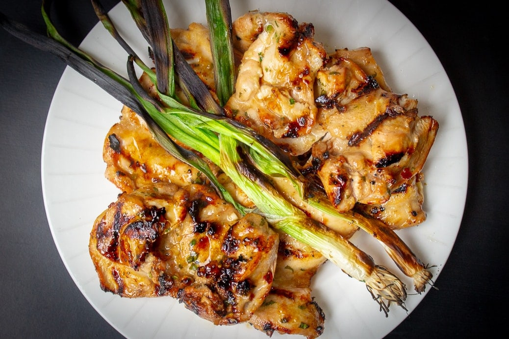

Vietnamese Grilled Chicken

Description
I love this Vietnamese grilled chicken straight off the grill, in Pho, in rice bowls or in salads. The marinade permeates the chicken to make it succulent, distinctive and delicious.
The grilled chicken blends slightly sweet, tangy, salty and savory flavors from the marinade of ginger, garlic, soy, lime juice, fish sauce, brown sugar and cilantro. You can make it as hot as you like with chili flakes.
Ingredients
- 1 pound boneless skinless chicken thighs (or breasts)
- garnish (optional) - 2-3 green onions
Vietnamese Chicken Marinade
- 1 1/2 tablespoon lime juice (about 1 small lime)
- 1 1/2 tablespoon neutral or vegetable oil (vegetable, canola, olive oil-but not extra virgin)
- 2 tablespoon soy sauce (low sodium is fine)
- 1/2 tablespoon Fish sauce
- 2 tablespoon brown sugar
- 2 teaspoon minced garlic (2 garlic cloves)
- 1 teaspoon fresh grated ginger - or more if you like (or pinch of ground ginger)
- 1/4 teaspoon red chili flakes (medium to medium-mild heat)
- 1 tablespoon cilantro (and more for garnish if desired)
Instructions
- PREPARE CHICKEN: Trim larger pieces of fat from chicken (don't worry about smaller ones - they'll burn off). Pound chicken to even thickness for even cooking. I use the bottom of a pot or heal of my hand.
- MARINATE CHICKEN: Place all marinade ingredients in a ziploc bag or sealed container. Mix or squish bag to combine well. Add chicken, Seal bag/container and marinate at room temperature for 30 minutes or overnight in fridge.
- HEAT GRILL to medium-high. Oil grill with paper towel or spray.
- GRILL CHICKEN AND SERVE: Remove chicken from marinade (reserve marinade for sauce if desired Note 2). If using low salt soy sauce, lightly sprinkle chicken with salt. Grill chicken for 3-5 minutes per side, depending on thickness of chicken. Instant thermometer should read 160F. Add green onions for last 2-3 minutes if using. Transfer chicken to plate. Cover loosely with foil and let rest 5 minutes. Garnish with green onions and chopped fresh cilantro if desired. Note 3 to bake.